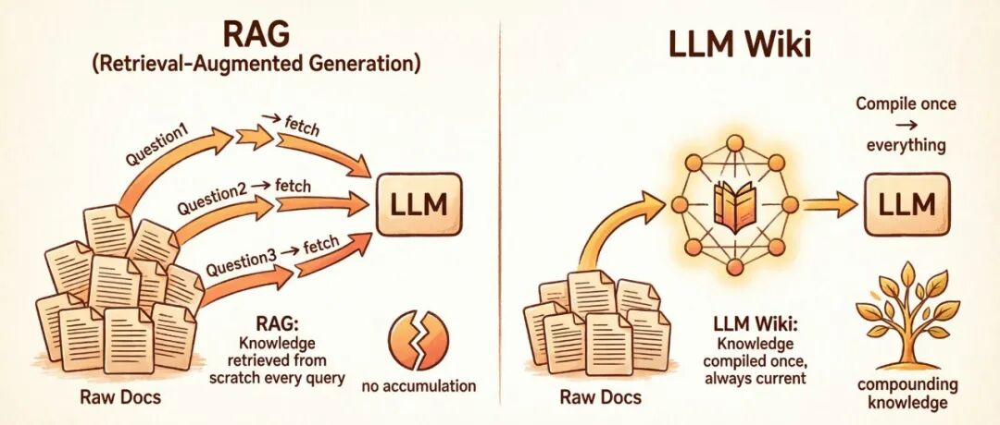
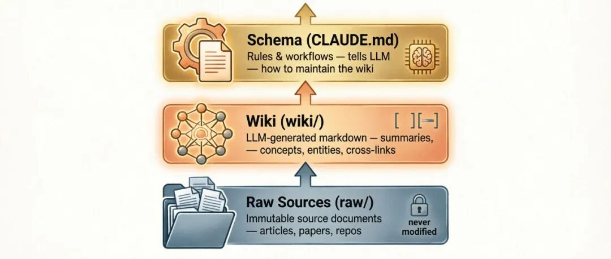
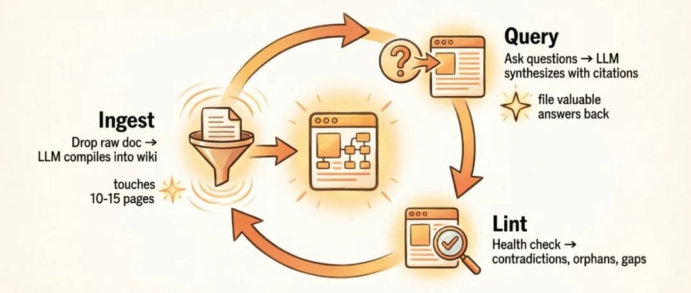
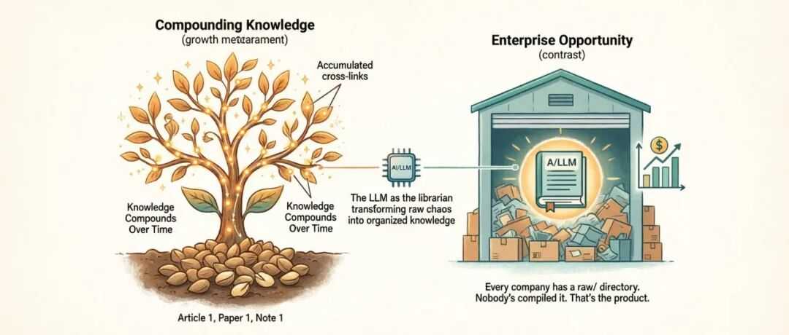

把论文丢给AI，等它回答问题——这是RAG，是目前的主流。
Karpathy说：这套范式，从根上就错了。
一个让AI工程师们炸锅的帖子
2026年4月3日，Andrej Karpathy（OpenAI联合创始人、特斯拉前AI总监、"vibe coding"这个词的发明者）在X上发了一条推文。
主题是：他怎么用LLM来管理个人知识库。
这条推文爆了。
他的核心观点翻译过来是这样的：
"我最近发现，用LLM来构建个人知识库这件事，比我想象中有用太多了。我现在把大量的token消耗从'写代码'转移到了'管理知识'上。在我的研究wiki里，大约有100篇文章、40万字，每次我问AI一个问题，它能从这个wiki里给我综合出一个完整的答案——而这个答案，来自几十篇原始文档的交叉引用。"
然后4月4日，他发了一个后续，链接到了一个GitHub gist，标题就叫 "LLM Wiki"。
这不再是代码，不再是App。这是一种全新的思维模式。
RAG的困境：你以为在用知识，其实在"考古"
要理解Karpathy在做什么，先要理解RAG（Retrieval-Augmented Generation）的问题在哪里。
大多数人和LLM处理文档的方式是这样的：
- 1. 把一堆文件上传到某个系统
- 2. 问一个问题
- 3. 系统通过向量搜索（embedding），找到最相关的片段
- 4. 把片段喂给LLM，生成答案
这是RAG，是目前连接LLM和私有数据的主流范式。NotebookLM、ChatGPT的文件上传、大部分企业AI工具，都是这么干的。
问题在哪？
Karpathy一针见血：
"LLM在每个问题上都从零开始重新发现知识。没有任何积累。"
你问一个需要综合五篇文档的问题，RAG系统每次都要重新查找、重新拼凑片段。你明天再问同样的问题，它做完全一样的工作。什么都没有建立起来。什么都没有累积。
RAG是一个用完即弃的系统。每次回答都是一次性的考古挖掘，挖完就结束，下次从头再来。

LLM Wiki的核心思路：知识要被编译，不是被检索
Karpathy的替代方案，用一句话概括：
"LLM不是在查询时检索原始文档，而是在摄入时就增量构建和维护一个持久的wiki——一个结构化的、带内部链接的Markdown文件集合，它存在于你和原始文档之间。"
这是两种完全不同的哲学：
RAG：知识在查询时被处理。每次问题，临时检索。
LLM Wiki：知识在摄入时被编译。一次性整理，之后持续维护。
当你添加一篇新文档时，Wiki系统里的LLM不会只是给它建个索引等以后检索。它会：
- • 阅读文档
- • 提取关键信息
- • 把内容整合进现有的wiki——更新实体页面、修订主题摘要、标注新旧数据之间的矛盾、强化或挑战正在演进中的综合判断
关键一句话：知识被编译一次，然后保持最新，不需要在每次查询时重新推导。
三层架构：一个清晰的结构
Karpathy定义了三个明确的层次，每层有清晰的职责。

第一层：Raw Sources（原始文档）
这是你的源文档精选集——文章、论文、图片、数据文件。
原始文档是不可变的。LLM可以读取，但永远不能修改。这是你的信任根源。
Karpathy用了一个raw/目录来存放：
raw/
articles/ # 网络文章
papers/ # 学术论文 PDF
repos/ # GitHub仓库笔记
data/ # CSV、JSON数据
images/ # 原始图片为什么不可改很关键？因为这意味着你始终有原始文档可以验证。如果LLM在wiki里出了错，你可以追溯到原始文档纠正它。
源文档是锚点，永远不能丢。
第二层：Wiki（LLM生成的维基）
这是由LLM生成的Markdown文件集合——摘要、实体页面、概念页面、对比文章、一个总览、一个综合。
LLM完全拥有这一层。它创建页面、在新文档到达时更新它们、维护交叉引用、保持一切一致。
你读它，LLM写它。
Wiki目录结构示例：
wiki/
index.md # 全站总目录
log.md # 活动时间线
overview.md # 高层次综合
concepts/ # 概念页面
attention-mechanism.md
mixture-of-experts.md
scaling-laws.md
entities/ # 实体页面
openai.md
anthropic.md
sources/ # 文档摘要
summary-attention-revisited.md
comparisons/ # 对比分析
gpt4-vs-claude-vs-gemini.md关键洞察：wiki存在于你和原始文档之间。你不是读原始论文来回答问题——你读wiki。Wiki是预先消化好的、交叉引用过的、综合过的。它就是那个"研究助手读完所有资料后帮你整理好的笔记"。
第三层：Schema（规范说明）
这是一个文档（比如Claude Code的CLAUDE.md或Codex的AGENTS.md），告诉LLM：
- • Wiki的结构是什么
- • 有哪些约定
- • 在摄入文档、回答问题或维护wiki时，工作流是什么
这是最关键的配置文件——它让LLM成为一个自律的wiki维护者，而不是一个通用的聊天机器人。
Schema会随着你对这个领域的理解加深而共同演进。你从基础版本开始，然后在发现什么页面结构、frontmatter字段、工作流最适合你的领域后不断迭代。
没有Schema，每次和LLM的对话都从零开始。 有了Schema，LLM获得了跨会话的持久记忆，变成你的专属wiki管理员。
三个核心操作：Ingest、Query、Lint

Ingest（摄入）：新文档进入系统
你把一篇新文档丢进raw/，然后告诉LLM："请摄入它。"
一次摄入可能影响10-15个wiki页面。
举例：摄入一篇关于MoE（混合专家）效率的新论文，LLM可能会：
- 1. 为这篇论文创建一个新的摘要页面
- 2. 更新"混合专家"概念页面，加入新变体
- 3. 更新"扩展定律"页面，加入新的基准测试数据
- 4. 更新"稠密vs稀疏"页面的对比结论（如果新论文有矛盾观点）
- 5. 更新论文作者或机构的实体页面
- 6. 如果这篇论文评测了已知模型，更新对比页面
- 7. 在现有页面中添加指向新内容的链接
- 8. 在index.md中添加新页面
- 9. 在log.md中记录这次摄入
一次摄入，牵动全局。Wiki变得比各部分之和更丰富。
Query（查询）：向wiki提问
你向wiki提问，LLM搜索相关页面，阅读它们，综合出带[[wiki-link]]引用的答案。
最重要的洞察在这里：有价值的答案，可以被归档回wiki成为新页面。
你问了一个对比分析，LLM给你做了一个详细的表格对比。你说"这个很好，帮我存成wiki页面"。LLM把它创建为wiki/comparisons/xxx.md，同时更新index.md和所有相关页面的链接。
这样，你的探索本身也在积累进知识库。Wiki的成长不只是来自外部来源，也来自你自己的探索。
答案可以不只是文字——还可以是Markdown页面、Marp格式的幻灯片、matplotlib图表，甚至是HTML可视化。
Lint（整理）：维护wiki健康
定期让LLM做一次"wiki体检"：
- • 查找页面之间的矛盾
- • 找出被新来源取代的过时说法
- • 找出没有任何导入链接的"孤儿页面"
- • 找出被提及多次但还没有独立页面的重要概念
- • 建议下一步需要调查的问题
一次Lint输出的示例：
Wiki健康报告（2026-04-04）
矛盾（2处）：
- dense-vs-sparse.md声称稠密>稀疏，
但summary-moe-efficiency.md显示相反。建议：加入更细致的区分。
- openai.md说GPT-5是200B参数，
但summary-gpt5-leak.md说是300B。
孤儿页面（3个）：
- tokenization.md（无导入链接）
- summary-old-bert-paper.md（无引用）
缺失页面（4个）：
- "RLHF"被提及12次，尚无概念页面
- "Constitutional AI"被提及8次，尚无页面
- "KV Cache"在5个来源中被引用，无页面
建议调查：
- 2025年之后的推理优化资料空白
- Meta AI实体页面内容单薄
- Scaling Laws页面已3周未更新Wiki不只是越滚越大，它还在自我修正。
为什么Index.md可以替代向量搜索？
这是Karpathy方案里最反直觉的一点。
很多人觉得做知识库必须要有向量数据库和embedding管道。但Karpathy说：在中等规模下（~100个来源、数百个页面），一个维护良好的index.md文件完全够用。
工作流程：LLM回答问题时，先读index.md找到相关页面，再深入阅读那些页面。这个方法在中等规模下效果出奇地好，完全不需要embedding基础设施。
当wiki大到index.md本身也变得太大、一次读不进上下文窗口时，Karpathy推荐用 qmd——一个本地Markdown搜索引擎，结合BM25关键词搜索、向量语义搜索和LLM重排序，全部在本地运行，不走云端API。
工具栈：一个完整的系统
Karpathy在gist里提到了一个完整的工具生态：
Obsidian：Wiki的IDE。LLM在一边编辑，Obsidian在另一边实时浏览结果——跟踪链接、查看图形视图、阅读更新后的页面。Karpathy的比喻："Obsidian是IDE；LLM是程序员；wiki是代码库。"
Obsidian Web Clipper：浏览器插件，把网页文章转换成Markdown。抓取的文章自动添加YAML frontmatter（作者、日期、来源URL、标签），保留格式、代码块和图片，保存到Obsidian vault。
qmd：本地搜索工具。结合BM25全文搜索、向量语义搜索和LLM重排序。有CLI（LLM可以shell调用）和MCP服务器（LLM可以作为原生工具调用）。完全本地运行，数据不离开你的机器。
Marp：Markdown幻灯片格式。Obsidian有插件，可以从wiki内容直接生成演示文稿。
Dataview：Obsidian插件，对页面frontmatter运行查询，生成动态表格和列表。比如：列出所有来源数最多的概念页面、找出过去一周更新的所有页面、找出置信度低的页面。
Git：整个wiki就是一个Git代码仓库。你免费获得版本历史、分支和协作。git log看wiki如何演进、git diff看每次摄入改了什么、git revert回滚一次糟糕的编译。
个人知识库的三种典型用法
用法一：深度研究
Karpathy自己的主要场景。他的研究wiki有大约100篇文章、40万字，持续数周或数月对某一主题的深入研究。
每读一篇新论文，LLM把它编译进wiki——更新概念页面、添加交叉引用、标注矛盾、形成一篇正在演进中的综合论文。
随着时间推移，你对某个领域形成了一个不断演进的论点，每篇新来源都在精炼它。这不是RAG能做到的。
用法二：读书笔记
每读一章，就把内容整理进wiki。建立人物、主题、情节线索的页面，并看到它们如何相互连接。
Karpathy举了一个 vivid 的例子："想象一下《指环王》的粉丝wiki——数千个内部链接的页面，把托尔金的世界织成一张网。"
用法三：个人成长记录
跟踪自己的目标、健康、心理、自律——整理日记条目、文章、播客笔记，随着时间建立一个关于自己的结构化图景。
问LLM："我在过去3个月里能量水平有什么规律？"
LLM会整合你所有的日记、运动记录、睡眠数据，给出一个跨时间的分析——这是任何RAG系统都做不到的，因为它需要跨条目综合，而不只是检索。
LLM Wiki vs RAG：核心对比
| 维度 | 传统RAG | LLM Wiki |
|---|---|---|
| 知识处理时机 | 查询时（每次问题都重新处理） | 摄入时（每个来源只处理一次） |
| 交叉引用 | 每次查询临时发现 | 预建并持续维护 |
| 矛盾处理 | 可能注意不到 | 在摄入时被标注 |
| 知识积累 | 无——每次查询从零开始 | 复合增长——每个来源和问题都让wiki更丰富 |
| 输出格式 | 对话回答（短暂的） | 持久性Markdown文件（持久的） |
| 谁维护 | 系统（黑箱） | LLM（透明、可编辑） |
| 人类角色 | 上传和查询 | 策展、探索、提问 |
| 适用规模 | 百万级文档 | 100~10,000高质量文档 |
| 透明度 | 低（向量是数学） | 高（直接可读、可追溯） |
RAG像一个巨大的、无序的仓库，配有一个非常快的叉车司机。你能找到任何东西，但你不知道它为什么在那里，也不知道它和旁边的托盘有什么关系。
LLM Wiki像一个有馆长的图书馆，馆长不断在写新书来解释旧书。知识是主动生长的。
企业机会："raw/目录里的东西，每个公司都有，但从来没人编译过"

Karpathy的推文发出后，很多人注意到了企业应用的可能性。
Vamshi Reddy在评论里说："每个公司都有一个raw/目录。从来没人编译过。这就是产品。"
Karpathy本人也认为这代表了一个"令人难以置信的新产品"类别。大多数公司被非结构化数据淹没——Slack日志、内部wiki、PDF报告，没人有时机去综合它们。Karpathy式的企业层不只是搜索这些文档——它会积极撰写一本实时更新的"公司圣经"。
从个人研究wiki到企业运营的跨越被认为是最大的挑战。Edra联合创始人Eugen Alpeza指出："数千名员工、数百万条记录、跨团队的部落知识互相矛盾。这正是我们在企业里建设的东西。"
还有一个更前沿的方向：多Agent协调的Wiki。Secondmate创始人@jumperz提出了"Swarm Knowledge Base"——把wiki工作流扩展到一个10 Agent系统，用OpenClaw管理。核心挑战是：当一个Agent产生幻觉时，幻觉会在集体记忆里复合和传染。解决方案是引入一个专门的"质量门"——用Hermes模型作为独立监督者，对每篇草稿文章评分验证，然后才升入"实时"wiki。这创造了一个"复合循环"：Agent们转储原始输出，编译器组织它们，Hermes验证真实性，验证后的简报在每个会话开始时反馈给Agent们。
未来方向：让LLM维护自己的记忆
Karpathy最后探索的这个数据的终极目的：合成数据生成和微调。
随着wiki增长，数据通过持续的LLM整理变得越来越"纯净"，它就成了完美的训练集。不只是LLM在上下文窗口里读wiki——你最终可以用wiki本身微调一个更小、更高效的模型，让LLM"内化"研究者个人的知识库，本质上把一个个人研究项目变成一个定制的、私有的智能体。
这是最激进的愿景：从"用LLM管理知识"到"用知识训练专属LLM"。
总结：LLM Wiki的核心哲学
- 1. 知识要被编译，不是被检索。摄入时处理一次，之后保持最新，而不是每次查询都重新来。
- 2. LLM是图书管理员，不是搜索引擎。主动组织、综合、纠错，而不是被动等待问题然后检索片段。
- 3. Markdown是数据格式，不是笔记格式。纯文本、人类可读、LLM原生可读、永不过时。
- 4. Obsidian是IDE，LLM是程序员，wiki是代码库。人做策展和方向，LLM做所有执行工作。
- 5. 知识是复合资产，不是消耗品。每次摄入、每个问题、每次lint，都在让wiki更丰富、更准确、更有价值。
一句话概括Karpathy的哲学：
"你自己从不（或很少）写wiki——LLM写并维护它。你的职责是来源、是探索、是提出正确的问题。LLM做所有苦活——总结、交叉引用、归档、记账。"
我们正在进入"自主档案"的时代。
#AI #LLMWiki #Karpathy #知识管理 #RAG #第二大脑 #Obsidian #AIAgent